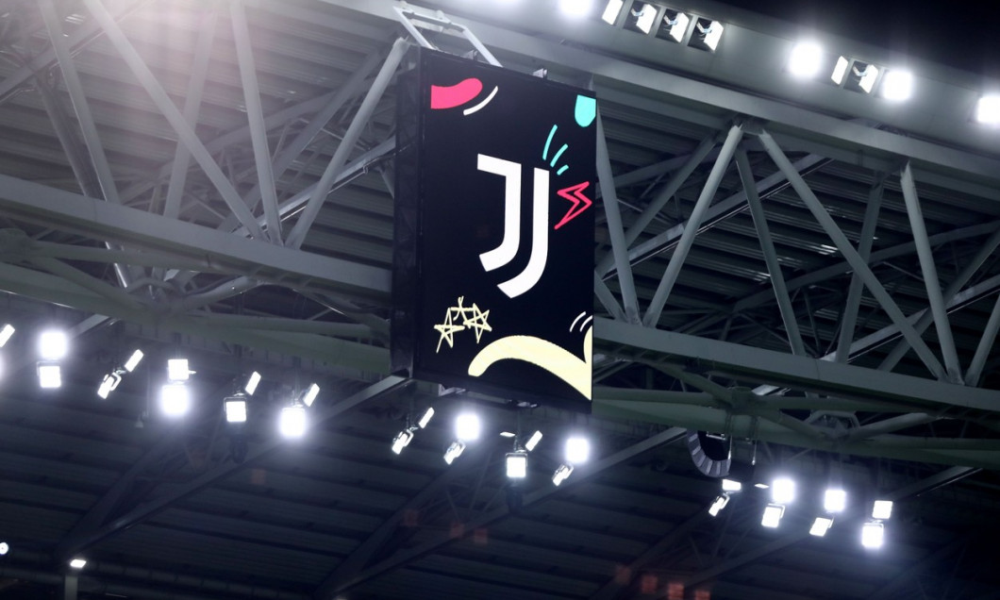

Răsturnare de situație! Juventus, gata să-și recupereze cele 15 puncte cu care a fost sancționată.

Penalizată cu 15 puncte din cauza unor fraude contabile constatate cu ocazia unor transferuri de jucători
între
2018 şi 2021, Juventus ar putea scăpa de un proces...
Ce se întâmplă cu Adi Mutu dacă Rapid ratează obiectivul? Victor Angelescu a dat răspunsul
View More
”La ce echipe ai vrea să joci dacă ai putea alege acum?” Ioan Ovidiu Sabău a răspuns fără să stea pe gânduri
View More
Erik ten Hag și-a anunțat decizia! Ce se întâmplă cu banderola de căpitan la Manchester United, după 0-7 cu
Liverpool
View More
Intervenție la nivel înalt pentru ca Novak Djokovic să poată intra în SUA
View More
Depășit spectaculos în turul 38, Lewis Hamilton s-a dus după Fernando Alonso chiar în timpul interviului
View More